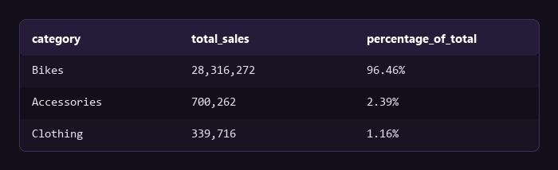
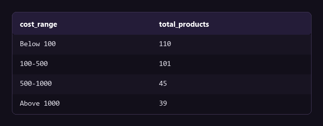
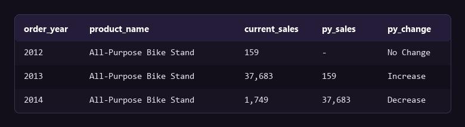

Purpose of this analysis
The SQL EDA project answers what happened. This project measures how much each result matters and if the business can repeat it. It uses the same gold schema in PostgreSQL 17, with window functions, CTEs, and two reporting views (gold.report_customers and gold.report_products). These give comparisons that a plain GROUP BY cannot give.
Does a second method confirm the Bikes concentration?
The EDA project measured Bikes at 96.5% of revenue with a simple GROUP BY. Here I calculate the same share with a window function. The category total and the grand total are then in the same row, and no second query is necessary for the check.

Query
WITH category_sales AS (
SELECT p.category, SUM(f.sales_amount) AS total_sales
FROM gold.fact_sales f
LEFT JOIN gold.dim_products p ON p.product_key = f.product_key
GROUP BY p.category
)
SELECT category, total_sales,
SUM(total_sales) OVER () AS overall_sales,
ROUND((total_sales::numeric / SUM(total_sales) OVER ()) * 100, 2) AS percentage_of_total
FROM category_sales ORDER BY total_sales DESC;The window function gives 96.46%. Two different methods agree, so the concentration is a property of the data and not an error in one query. This result belongs with the owner of the product roadmap.
How is the product catalog distributed by cost?
Cost bands turn 295 separate prices into a distribution. They show if the catalog is a set of low-cost accessories with a few premium items, or a more equal spread.

Query
SELECT
CASE
WHEN cost < 100 THEN 'Below 100'
WHEN cost BETWEEN 100 AND 500 THEN '100-500'
WHEN cost BETWEEN 500 AND 1000 THEN '500-1000'
ELSE 'Above 1000'
END AS cost_range,
COUNT(product_key) AS total_products
FROM gold.dim_products
GROUP BY cost_range ORDER BY total_products DESC;71% of the catalog, 211 of 295 products, costs less than $500. Only 39 products cost more than $1,000. With the category result above, this shows a catalog full of accessory-priced items and a small set of premium bikes. The accessory volume does not become accessory revenue.
Was the 2013 increase durable growth?
The EDA project showed 2013 at almost three times 2012. A year-over-year comparison at product level shows if the increase was wide and durable, or the result of a few single events.

Query
WITH yearly_product_sales AS (
SELECT EXTRACT(YEAR FROM f.order_date)::int AS order_year,
p.product_name, SUM(f.sales_amount) AS current_sales
FROM gold.fact_sales f
LEFT JOIN gold.dim_products p ON f.product_key = p.product_key
GROUP BY EXTRACT(YEAR FROM f.order_date), p.product_name
)
SELECT order_year, product_name, current_sales,
LAG(current_sales) OVER (PARTITION BY product_name ORDER BY order_year) AS py_sales
FROM yearly_product_sales ORDER BY product_name, order_year;The pattern of 159 in 2012, 37,683 in 2013, and 1,749 in 2014 repeats across dozens of products. This is an increase followed by a fall, and not durable growth. The cause can be a bulk order, a promotion, or a sales channel that closed. Until the cause is known, 2013 must not become the planning baseline.
Bottom line
Two independent methods give the same share for Bikes, 96.5% and 96.46%, so the concentration is real. The catalog does not match it: 211 of 295 products cost less than $500, and that accessory volume produces almost no revenue.
The 2013 increase is not a baseline. The same rise and fall repeats across dozens of products, so a plan built on 2013 will miss the 2014 result. Use 2011 and 2012 for the forecast, and find the cause of 2013 before you repeat it.